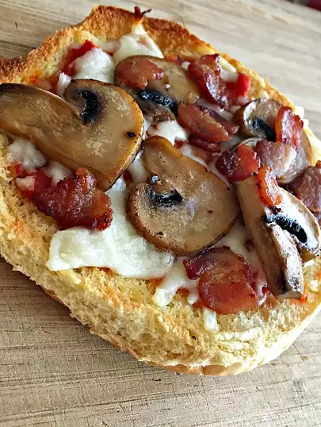

Quick and Easy Pizza

Description
Quick and Easy Pizza without all the hassle. Using buns instead of dough you can make great mini-pizzas.
Ingredients
- 8 Ball Park Hot Dog Buns
- 2 cups of tomato sauce
- 3 teaspoons of garlic granules
- 3 teaspoons of dried italian herb blend
- 1 teaspoon of sweet paprika
- 1 teaspoon of kosher salt
- 1 teaspoon of gourn black pepper
- 1 pound bulk mild italian sausage
- 2 tablespoons extra virgin olive oil
- 1 teaspoon garlic granules
- 1 teaspoon dried italian herb blend
- 1/2 pound pepperoni slices
- 1 cup of grates mozzarella cheese
- 1/2 cup of grated Parmesan cheese
- 3 sprigs of Fresh oregano
- 1 pinch of crushed red pepper